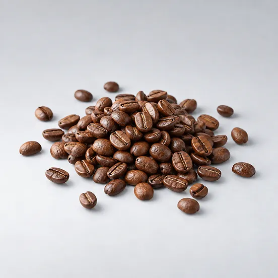
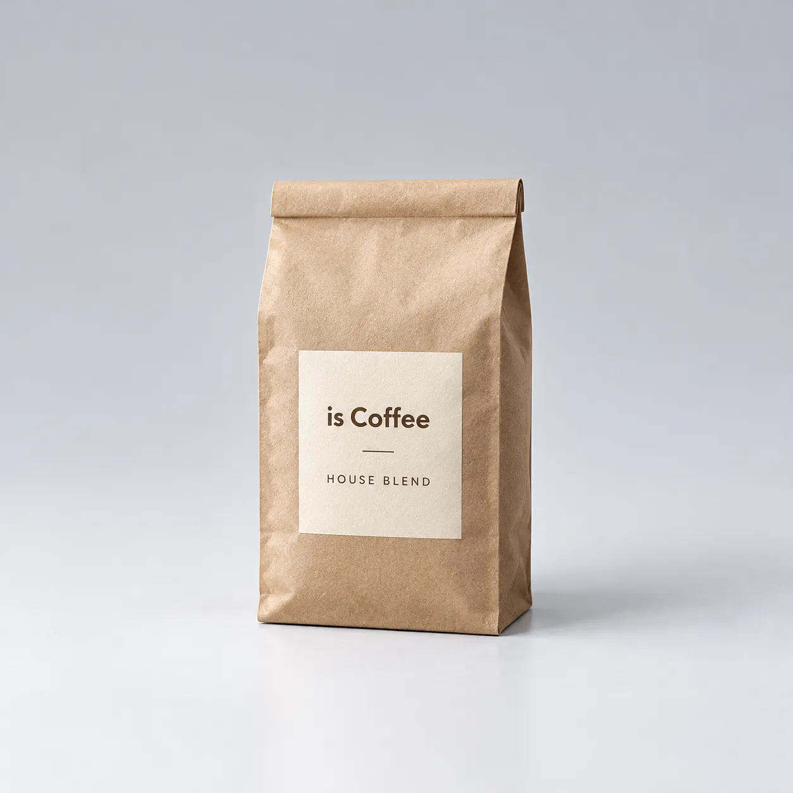
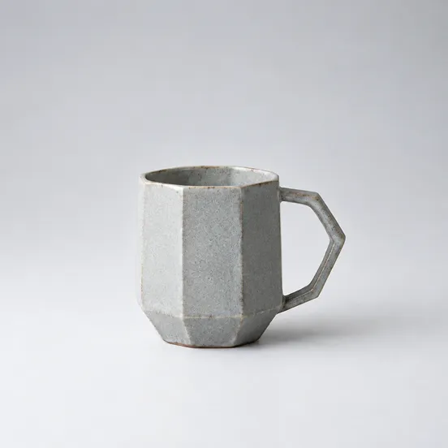
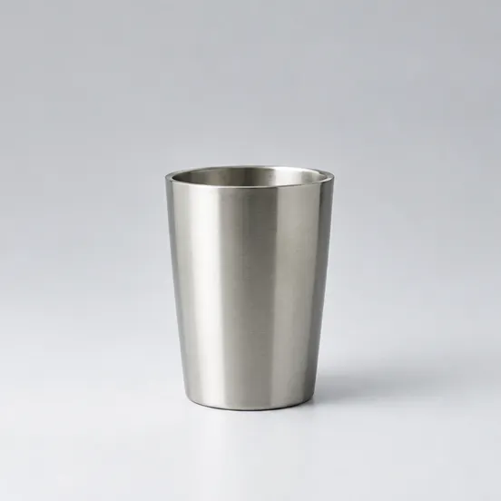
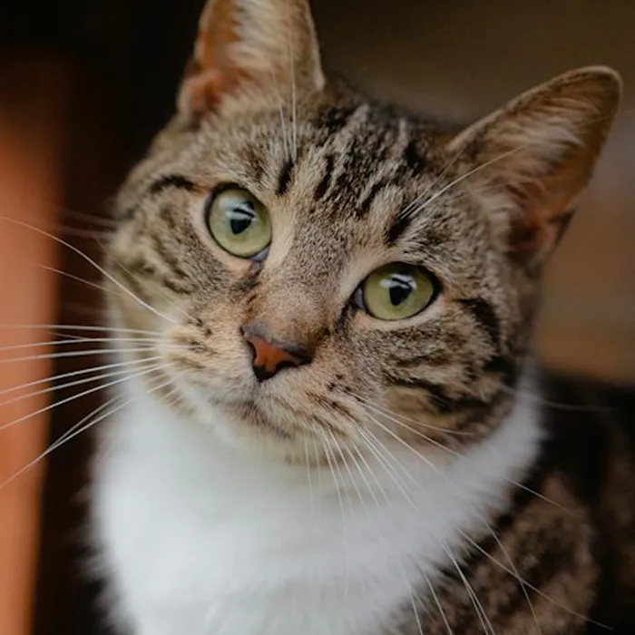
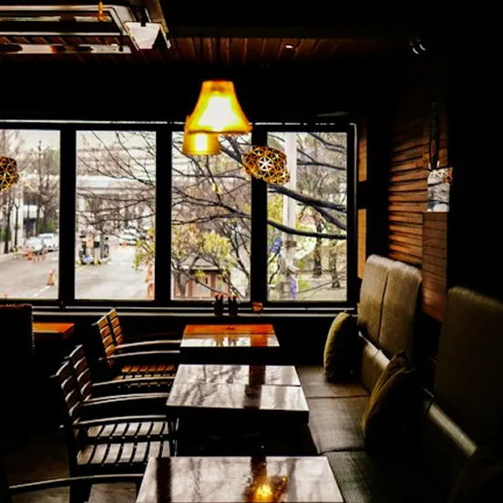
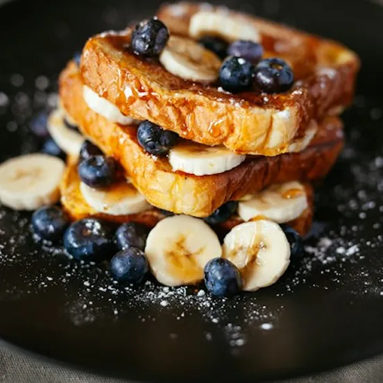

日常に、少しだけ特別な余白を。
Information
今週の週替わりのブレンド
今週は、やわらかな甘みと香ばしさが広がる、バランスのよいブレンドをご用意しました。
ひと口目にはナッツのような香り、後味にはチョコレートを思わせる穏やかな余韻。
週ごとに変わる豆の個性を、ぜひお楽しみください。
季節のシングルオリジンが届きました
今季は、エチオピア南部のグジ地区で育まれたコーヒー豆をご用意しました。
標高の高い山岳地帯に位置するグジ地区は、豊かな自然環境と昼夜の寒暖差に恵まれたコーヒー産地です。
今回の豆は、収穫したコーヒーチェリーを果実のまま乾燥させる「ナチュラル精製」で仕上げられたもの。ベリーを思わせる華やかな香りと、果実のような甘み、やわらかな酸味が特徴です。
豆本来の個性を引き出す浅煎りで、すっきりとした後味に仕上げました。
この季節だけの特別な一杯を、ぜひお楽しみください。
秋の味覚を楽しむ、季節のキッシュが登場しました
季節の野菜を使ったキッシュに、秋の味わいが仲間入りしました。
今回使用するのは、ほくほくとした甘みのあるかぼちゃと、香り豊かな舞茸、しめじ。秋ならではの食材を組み合わせ、素材の持ち味を大切に仕上げています。
バターの香るサクサクの生地に、卵と生クリーム、チーズを合わせたなめらかなフィリング。かぼちゃのやさしい甘みと、きのこの旨みが口いっぱいに広がります。
軽めのランチにはもちろん、コーヒーのお供にもおすすめです。
About
コーヒーを味わう時間を、
もっと自由に。
豆の個性を大切に、
一杯ずつ丁寧に淹れるコーヒー。
お気に入りの器に触れながら、
本を読んだり、ただぼんやりしたり。
店内では、
看板猫も気ままに過ごしています。
慌ただしい日常から少し離れて、
自分だけの時間を楽しむ。
is Coffeeは、そんな何気ないひとときを
大切にするカフェです。
Online Shop





気まぐれな、
もうひとりの店主。看板猫 ミル
is
Coffeeには、
のんびり気ままに過ごす看板猫がいます。
窓辺でくつろいだり、店内をお散歩したり。
コーヒーの香りに包まれながら、猫と過ごすひとときをお楽しみください。
お店の何気ない日常を、
少しずつ。
季節のコーヒーや新メニュー、
看板猫の気ままな日常など、
is Coffeeの「今」をお届けしています。


＠is_coffee
Access
- Access
- 〒650-0011 兵庫県神戸市中央区下山手通5丁目7-7 105
- Open
- 8:00 - 18:00 (LO:17:00)
- Close
- 毎週火曜日・第3水曜日
- Station
- 神戸市営地下鉄 新神戸駅より徒歩7分
JR・阪急・阪神 三宮駅より徒歩15分 - Tel
- 000-000-0000